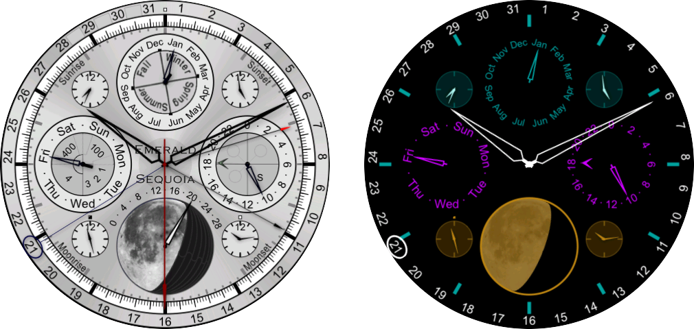
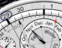
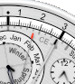
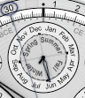
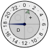
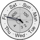
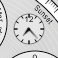

| Buy this face |
|
| Buy all 21 faces |
|
| Buy this face |
|
| Buy all 21 faces |
|
Geneva takes its name from the city in Switzerland, home to many of the world's finest watchmakers.
Geneva is a complex multi-dial face with many traditional complications plus a few modern twists. There are 21 hands plus 9 additional indicators. The hours, minutes and seconds are standard (but with no numbers on the dial). There is an am/pm dot just above the 12 o'clock position (white for am, black for pm). The thin gray-blue hand with the circle on the outermost dial indicates the day of the month.  The first twist on the classic look is that the day numbers 29 thru 31 appear only as needed. To the left, for example, is the appearance for Nov 29, 294 CE.
The white hand with a black tip indicates the last two digits of the year, read against

the inner gray dial with 100 divisions (zero is at the 12 o'clock position).
The thin white hand with a red tip indicates the two digit century, read against the same dial.
The example to the right shows the year 408 CE.
The primary hand of the subdial at 12 o'clock indicates the month. The interior region of that dial, which is marked with the seasons, rotates so that the boundaries between the seasons are properly aligned to the calendar months (though this rotation is tiny since the Gregorian reform; it was a whole month in 6000 BCE).

For more precision, the tiny hand in the seasons subdial changes at the exact time of each equinox and solstice
(not just the beginnings of the usual days).
Both are correct for both hemispheres (the example at left shows a southern hemisphere case).
The primary hand on the subdial at 3 o'clock simply shows the current local time in 24-hour format

while the small gray-green arrow shows the
The primary hand on the subdial at 9 o'clock shows the day of the week.  The tiny hand is another of Geneva's twists, a fully general leap year indicator. It points to 1, 2 or 3 in common years and 4 in regular leap years. But the Gregorian calendar skips 3 leap years every 400 years so the tiny hand points at 100 or 400 if one of the centurial rules applies. This is known as a "secular perpetual calendar" in horology jargon.
The four small subdials indicate the times of the sunrise, sunset, moonrise and moonset events for the current day.  The moonrise and moonset dials have am/pm dots above. If there is no event for the current day the corresponding dial will read 12:00 and the am/pm dot will be red.
The final twist is the moon phase indicator which shows a realistic terminator, rotated to match its actual orientation in the sky, exactly like the one on Chandra. sky. To achieve the realistic terminator shape (unlike the disc-over-disc shape often found on watches and clocks), Emerald Chronometer uses small covers that move throughout the lunar month to define the position of the terminator. Superimposed on this is a retrograde hand showing the age of the current lunation.
In ambient mode, the primary displays remain (in other colors to save energy), but some displays and hands (such as the year, century, and lunation hands) are omitted.